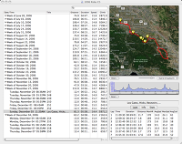
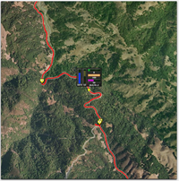
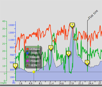
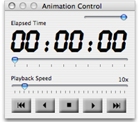
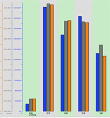

Ascent - Main Features
Ascent is designed to help cyclists, runners, and hikers train better by organizing activity data and presenting it in useful ways. Using Ascent, you can download activity data directly from your GPS into the program, and immediately begin analysing the data as it is presented to you in various graphical and textual formats. The "Animation" feature lets you re-play the activity so you can review in detail your performance during any segment of the activity.
Main Browser |
|
|  |
Ascent organizes your activities by week in the main browser. Lap and other summary data for each activity are displayed, as are totals and averages for each week. |
Map View |
|
|  |
The Map View plots the path you followed against one of several different, selectable map types. Maps can be zoomed or scrolled as desired. A "heads-up" display can be turned on that displays instantaneous data such as speed, heart rate, altitude, etc as the map animates to show your progress during the activity. |
Activity View |
|
|  |
The Activity View allows you to plot the activity data, such as altitude, speed, heart rate, etc against distance. By default, it displays a shaded plot of the altitude profile, with speed and heart rate shown as solid lines. The "peak" values for each of the data items can be displayed, and markers added indicating significant milestones encountered during the activity. The view is highly customizable, as are most things in Ascent. |
Animation! |
|
|  |
Ascent has a powerful integrated animation engine that can be used to play back an activity, simultaneously updating all open views and any visible heads-up displays. The speed of the animation can be adjusted, and activities can be played in reverse. |
Summary View |
|
|  |
The Summary View plots totals or averages for various data items on a weekly or monthly basis. Using this view, you can follow your progress as your training progresses toward a specific milestone or event. |